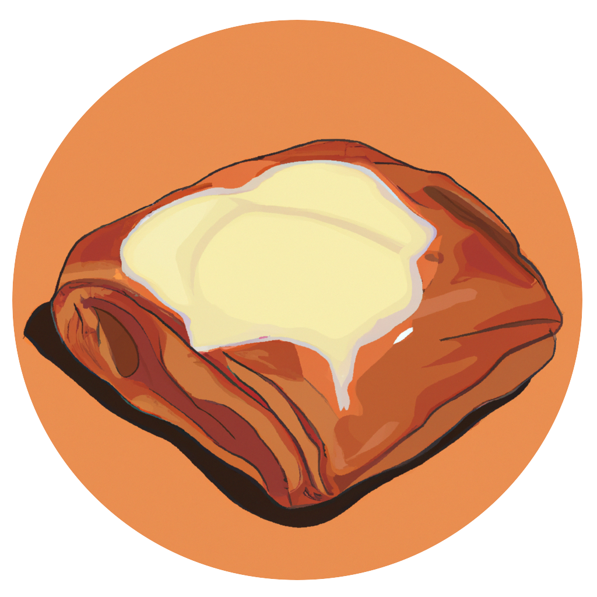

News and Changelog#
2.5.0 (10/04/23)
Removed support for 0.0.0 models. To use these models you will now have to use DaCy=<2.4.3
2.3.0 (05/01/23)
New tutorial added for using DaCy with textdescriptives. You can find it here
2.2.10 (05/01/23)
Added support for spaCy 3.4.0 - This required the wrapped component model to change name from e.g.
dacy.nertodacy/ner. As the.is no longer allowed by spaCy.Added support for the state-of-the-art NER model by Dan Nielsen - You can add this model to your pipeline using
nlp.add_pipe("dacy/ner")
2.0.0 (27/06/22): The Spandaur Update
{kind=link}
Added models for hate-speech detection and classification
A large part of DaCy is now moved to seperate packages to allow for more versatility:
Now uses spacy-wrap for including existing models in DaCy.
Removed augmenters, they are now available through the external package augmenty
Removed the rule-based sentiment pipeline instead we recommend using asent
Removed support for multiple installs, thus
pip install dacy[all]ordacy[large]is no longer required. This should simplify installation processes and avoid errorsDocumentation
Multiple bugfixes
1.2.0 (04/11/21)
Removed DaNLP dependency, now DaNLP models is downloaded directly from Huggingface’s model hub which is faster and more stable 🌟.
Removed the readability module, we instead recommend you use the more extensive textdescriptives package developed by [HLasse](https://github.com/HLasse) and I for extracting readability and other text metrics.
Added support for the configuring the default the model location with the environmental variable ‘DACY_CACHE_DIR’ thanks to a PR by dhpullack 🙏.
1.1.0 (23/07/21)
DaCy in now available on the Huggingface model hub 🤗 . Including detailed performance descriptions of biases and robustness.
It also got a brand new online demo - try it out!
And more, including documentation update and prettier prints.
1.0.0 (09/07/21)
- DaCy version 1.0.0 releases as the first version to pypi! 📦
Including a series of augmenters with a few specifically designed for Danish
Code for behavioural tests of NLP pipelines
And new tutorials for both 📖
A new beautiful hand-drawn logo 🤩
A behavioural test for biases and robustness in Danish NLP pipelines 🧐
DaCy is now officially supported by the Centre for Humanities Computing at Aarhus University
The first paper on DaCy; check it out as a preprint and code for reproducing it here! 🌟
0.4.1 (03/06/21)
DaCy now has a stunningly looking documentation site 🌟
0.3.1 (01/06/21)
DaCy’s tests now cover 99% of its codebase 🎉
DaCy’s test suite is now being applied for all major operating systems instead of just Linux 👩💻
0.2.2 (25/05/21)
The new Danish Model Senda was added to DaCy
0.2.1 (30/03/21)
DaCy now includes a small model for efficient processing based on the Danish Ælæctra 🏃
0.1.1 (24/03/21)
DaCy includes a wrapped version of major Danish sentiment analysis software including the models by DaNLP, as well as code for wrapping any sequence classification model into its pipeline 🤩
Tutorials is added to introduce the above functionality
0.0.1 (25/02/21)
DaCy launches with a medium-sized and a large language model obtaining state-of-the-art on Named entity recognition, part-of-speech tagging and dependency parsing for Danish 🇩🇰